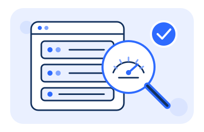
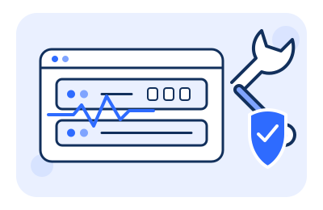
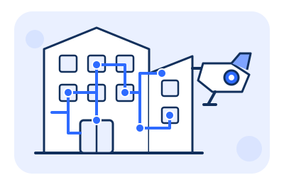

정보통신설비 성능점검
정보통신공사업법에 따른 정보통신설비 성능점검을 수행합니다. 네트워크·방송·CCTV 등 구내 통신설비의 상태를 진단하고 개선 방안을 제시합니다.
Business
설계·구축부터 점검·유지보수까지, 정보통신 인프라 전 주기를 담당합니다.

정보통신공사업법에 따른 정보통신설비 성능점검을 수행합니다. 네트워크·방송·CCTV 등 구내 통신설비의 상태를 진단하고 개선 방안을 제시합니다.

전산장비·네트워크장비·부대설비를 아우르는 통합 유지보수 서비스를 제공합니다. 신속한 장애 대응과 예방 점검으로 무중단 운영을 지원합니다.

네트워크 구축, 통신 배선, CCTV·출입통제 등 정보통신공사 전반을 설계부터 시공까지 원스톱으로 수행합니다.
Why BPT
누적 점검 실적 (임시)
유지보수 고객사 (임시)
업계 경력 (임시)
장애 대응 체계 (임시)
정보통신기술사·기사 등 유자격 전문 인력이 현장을 직접 수행합니다.
정보통신설비 성능점검 의무화에 맞춘 법정 기준 점검과 보고서를 제공합니다.
점검에서 발견된 문제를 공사·유지보수로 즉시 연결해 처리합니다.
Process
대상 설비 규모 확인 및 견적 산출
설비별 성능 측정 및 상태 진단
법정 기준에 따른 점검 보고서 작성
개선 공사 및 유지보수 연계